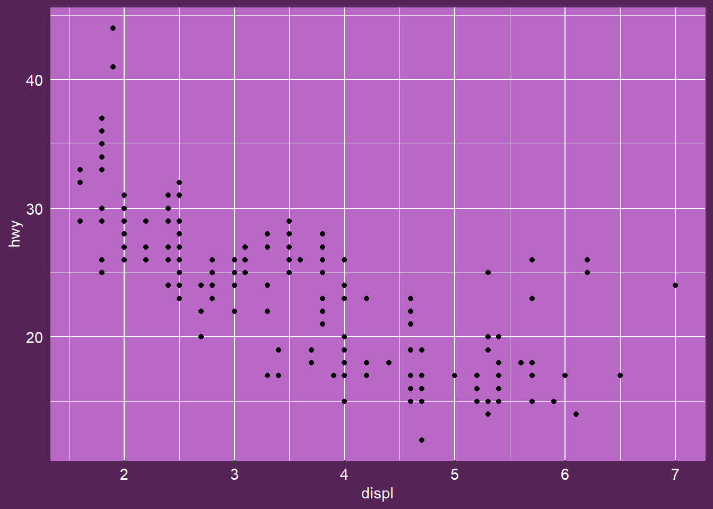

A kunoichi page
by Danielle Navarro, 15 Apr 2019
The kunoichi palette
In an earlier post I created the kunoichi palette. This is an example of a project page that uses this user-generated palette.
library(ggplot2)
library(slumdown)
ggplot(mpg, aes(displ, hwy)) +
geom_point() + theme_slum("kunoichi")